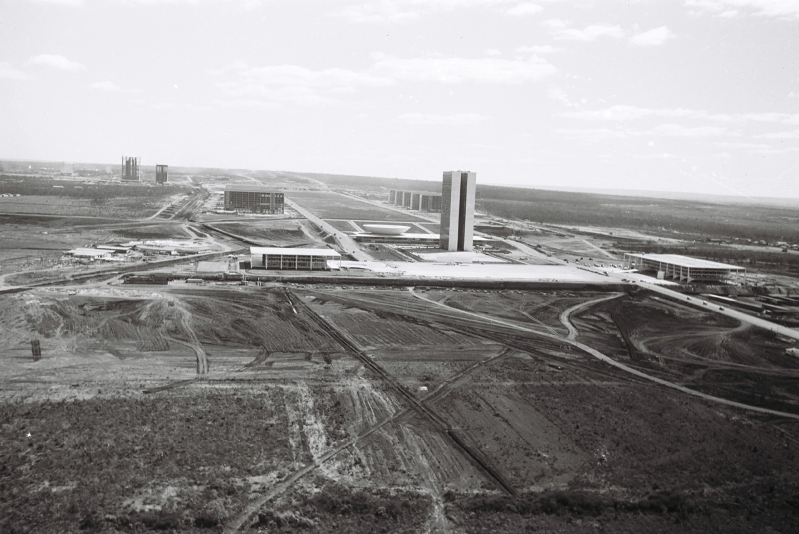
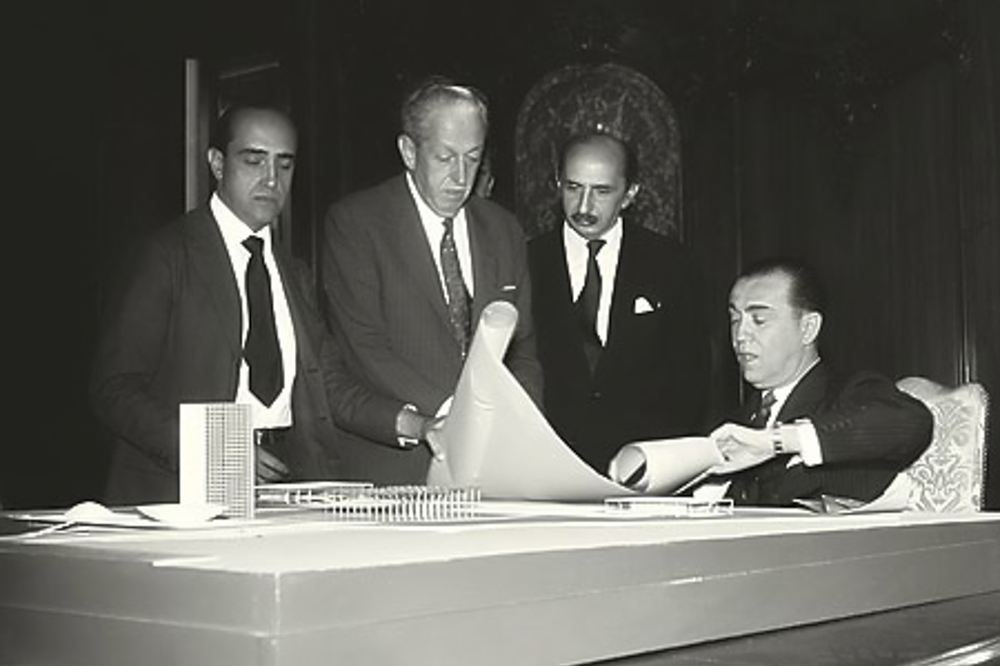

Surgimento de brasilia
As primeiras ideias
Na época do Brasil Colônia, já havia a ideia de levar a capital do país para a região central, para evitar ataques pelo mar. Mas a possibilidade só começou a ganhar força no Império. Em 1823, José Bonifácio de Andrada e Silva, conhecido como “Patriarca da Independência”, reforçou a proposta de levar a sede das decisões brasileiras para o interior do território e sugeriu pela primeira vez o nome “Brasília“.

O conceito
Para organizar a logística da obra, foi criada a Companhia Urbanizadora da Nova Capital (Novacap), que lançou no mesmo ano o “Concurso Nacional do Plano Piloto da Nova Capital do Brasil” com o objetivo de selecionar projetos urbanísticos para a construção da cidade.
Dentre dezenas de propostas, a vencedora, do arquiteto e urbanista Lúcio Costa, foi escolhida justamente pela simplicidade: a ideia, entregue em uma folha branca e desenhada a lápis, partiu do traçado de dois eixos cruzando-se em ângulo reto, como o sinal da cruz.
Uma dessas linhas, o Eixo Rodoviário, tinha o traço levemente inclinado, o que dava à cruz a forma de um avião. Ele seria a via que leva às áreas residenciais – hoje, Asa Sul e Asa Norte. A outra linha, que representava o Eixo Monumental, abrigaria os prédios públicos e o palácio do Governo Federal no lado leste; a Rodoviária e a Torre de TV no centro, e os prédios do governo local no lado oeste.
O nascimento
Em 21 de abril de 1960, Brasília nascia para o mundo e para a sua gente. Com os projetos urbanístico de Lúcio Costa e o arquitetônico de Oscar Niemeyer, surgia uma cidade sob formas inovadoras, diferente de tudo já feito até então. A data de seu nascimento, não foi coincidência: marcava o dia da morte de Tiradentes, um dos líderes mineiros que defendeu a independência do Brasil no século XVIII. O simbolismo ajudou a fortalecer em Brasília o ideal de liberdade de um povo e a coragem de uma nação, associando a inauguração à ideia de independência e rendendo homenagem aos inconfidentes que haviam sonhado com um Brasil livre.

Eventos disponives no aniversario de Brasilia
Maratona Brasília
Como parte do calendário oficial das comemorações dos 65 anos da cidade, a Maratona Brasília 2025 será realizada em 20 e 21 de abril. A largada será na Esplanada dos Ministérios, em frente ao Museu Nacional da República, com opções de percursos de 3km (caminhada), 5km, 10km, 21km e 42km. Além dos trajetos tradicionais, o evento conta com dois desafios: O Desafio JK, composto por 21km no dia 20 e 21km, no dia 21, e o Desafio BSB 65 Anos, com uma meia-maratona (21km) no primeiro dia e uma maratona (42km) no segundo.
Interessados podem se inscrever pelo site Brasil Corrida até 15 de abril. Os participantes ganham kit atleta com camiseta, ecobag, número de peito e medalha (pós-prova). Hoje (30/1), as inscrições podem ser feitas, de 10h às 19h, no Pavilhão do Parque da Cidade, no estande da Maratona Brasília próximo do local de entrega dos kits da Corrida de Reis, com um cupom de desconto total de R$ 32,90 (R$ 25 + R$ 7,90 da taxa de serviço do site) e pode ser ativado nas compras realizadas até as 23h59 de 1º de fevereiro, dia da Corrida de Reis. A promoção é válida para todas as modalidades. Mais informações estão no IG da Maratona: @maratona_brasilia
Shows
Festival DNA Brasil 2025 Evento que valoriza a diversidade cultural brasileira Apresenta a identidade e potencialidade de cada região do país Abrange áreas como gastronomia, artesanato, música, turismo e cultura Promove um encontro único entre todos os cantos do país. O Governo do Distrito Federal (GDF) está preparando uma celebração especial para o 65º aniversário de Brasília, que ocorrerá nos dias 19, 20 e 21 de abril de 2025.
Pontos turisticos de Brasilia
Catedral Metropolitana Nossa Senhora Aparecida
De autoria do arquiteto Oscar Niemeyer, a Catedral significou um marco na história da arquitetura moderna e de Brasília. O templo, inaugurado em 31 de maio de 1970, após 12 anos de construção, devido à complexidade do projeto, de tão inovador, foi tombado como Patrimônio Histórico e Artístico Nacional em 1967, antes mesmo de ser concluído. Composta por 16 vigas estruturais que vencem um vão de 70 metros de diâmetro, a nave circular está abaixo do nível do solo, onde se chega por um túnel de piso e paredes negras, que desemboca em um local de penumbra, uma zona de meditação. Concluído o trajeto, depara-se com a esplendorosa nave com iluminação de luz natural captada por vitrais de Marianne Peretti. Os Anjos da Anunciação estão dispostos em diagonal, dando a impressão de estarem em voo. Abriga, ainda, uma réplica oficial da Pietá. Na entrada, ao nível do solo, ficam esculturas em bronze, de autoria de Alfredo Ceschiatti, representando os quatro evangelistas, com 3 metros de altura. A exemplo das catedrais italianas, a Catedral Metropolitana é composta de edificações extranave, como o campanário em forma de torre encimada por viga que sustenta quatro sinos de diferentes tamanhos, doados pelo Governo espanhol.

Brasilia de noite e de dia
Homenagems feitas para o aniversario de brasilia